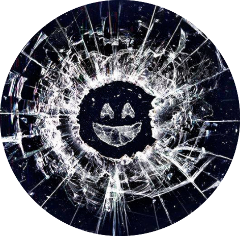

Potential risks of web technologies
Web solutions against the misuse of technologies
Web technologies to enable or prevent Black Mirror's dystopian future
Re-coding Black Mirror
Potential risks of web technologies
Web solutions against the misuse of technologies
Web technologies to enable or prevent Black Mirror's dystopian future